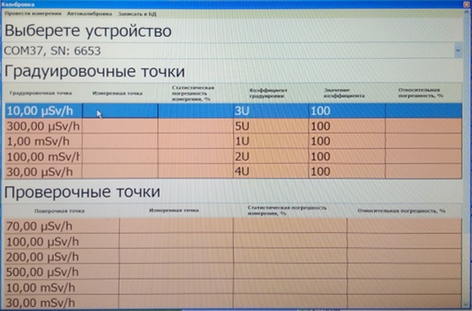

Градуировка МКС-АТ1125А
ЛИНЕЙНОСТЬ и ЭНЕРГЕТИКА
Установить 2 дозиметра на поверочную дозиметрическую установку УДГ-АТ110 таким образом, чтобы центральная ось коллимированного пучка гамма-излучения установки была перпендикулярна оси дозиметра и пересекала его через кольцевую риску на колпачке (допускается ориентация как по задней так и по боковой стенке), а расстояние от источника до центра детектора было выставлено по центру блоков на на отметке + расположенной на колпачке

На пульте управления КС-АТ110 нажать оцифровку в окне Х оцифровки

Далее нажать и

- Запустить ПО CalculationSources
- Подключить к ПК
- Запустить программу ATAS
 Записать номера каналов в электронный журнал градуировки
Записать номера каналов в электронный журнал градуировки
- Запустить ПО МКС_АТ1125_27
- Нажать Поиск
- Выбрать нужные для калибровки БОИ галочками в разделе использовать
- Выбрать Калибровка
Выбрать устройство (одно из 1125)
Выбрать любую градуировочную точку и нажать
Нажать

- Запустить ПО CalculationSourses
- Рассчитать расстояние для H*(10)
- Установить источник Cs137 7мкЗв/ч
- Дождаться хорошей статистики 2-5 %
- Градуировать показания (с учетом фона) выставив коэф 3U ≈100
- Нажать Записать коэффициенты
- Выставить точку Am 30 мкЗв/ч скорректировать показания коэф 4U (д.б. СДН 100, Китай 100)
- Выставить точку Cs 240мкЗв/ч скорректировать показания коэф 5U (д.б. СДН 45, Китай 40)
- Перепроверить Am 30 мкЗв/ч при необходимости скорректировать из-за совместного влияния 4U и 5U
- Снять точку Am 2 мкЗв/ч
- Проверить Со60 10мкЗв/ч
- Снять ПСИ по Cs в точках 0,07мк, 0,7мк, 70мк и 300мкЗв/ч
- Данные переписать в журнал градуировки
+ЛИНЕЙНОСТЬ МКС-АТ1125А
Установить 2 дозиметра на поверочную дозиметрическую установку УДГ-АТ130 таким образом, чтобы центральная ось коллимированного пучка гамма-излучения установки пересекала красную отметку (допускается ориентация как по задней так и по боковой стенке), а расстояние от источника до центра детектора было выставлено по другой красной отметке на корпусе
Основной вариант расположения

Вспомогательный вариант ориентации
 На пульте управления КС-АТ110 нажать "ЗАДАТЬ" оцифровку в окне Х оцифровки
На пульте управления КС-АТ110 нажать "ЗАДАТЬ" оцифровку в окне Х оцифровки
 Далее нажать Р1 и ОЦИФРОВКА
Далее нажать Р1 и ОЦИФРОВКА

- Запустить ПО МКС_АТ1125_27
- Нажать Поиск
- Выбрать нужные для калибровки БОИ галочками в разделе использовать
- Выбрать Калибровка
 Выбрать устройство (одно из 1125)
Выбрать устройство (одно из 1125)
 Выбрать любую градуировочную точку и нажать Произвести измерение
Выбрать любую градуировочную точку и нажать Произвести измерение
 Нажать Начать
Нажать Начать

- Запустить ПО CalculationSourses
- Рассчитать расстояние для H*(10)
- Установить источник Cs137 1мЗв/ч
- Дождаться хорошей статистики 2-5 %
- показания скорректировать коэффициентом 1U
- Установить точку 70мЗв/ч
- показания скорректировать коэффициентом 2U
- Снять ПСИ в точках 7мЗв, 70мЗв/ч
- Данные записать в электронный журнал градуировки